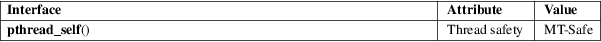

pthread_self − obtain ID of the calling thread
POSIX threads library (libpthread, −lpthread)
#include <pthread.h>
pthread_t pthread_self(void);
The pthread_self() function returns the ID of the calling thread. This is the same value that is returned in *thread in the pthread_create(3) call that created this thread.
This function always succeeds, returning the calling thread’s ID.
This function always succeeds.
For an explanation of the terms used in this section, see attributes(7).

POSIX.1-2008.
POSIX.1-2001.
POSIX.1 allows an implementation wide freedom in choosing the type used to represent a thread ID; for example, representation using either an arithmetic type or a structure is permitted. Therefore, variables of type pthread_t can’t portably be compared using the C equality operator (==); use pthread_equal(3) instead.
Thread identifiers should be considered opaque: any attempt to use a thread ID other than in pthreads calls is nonportable and can lead to unspecified results.
Thread IDs are guaranteed to be unique only within a process. A thread ID may be reused after a terminated thread has been joined, or a detached thread has terminated.
The thread ID returned by pthread_self() is not the same thing as the kernel thread ID returned by a call to gettid(2).
pthread_create(3), pthread_equal(3), pthreads(7)